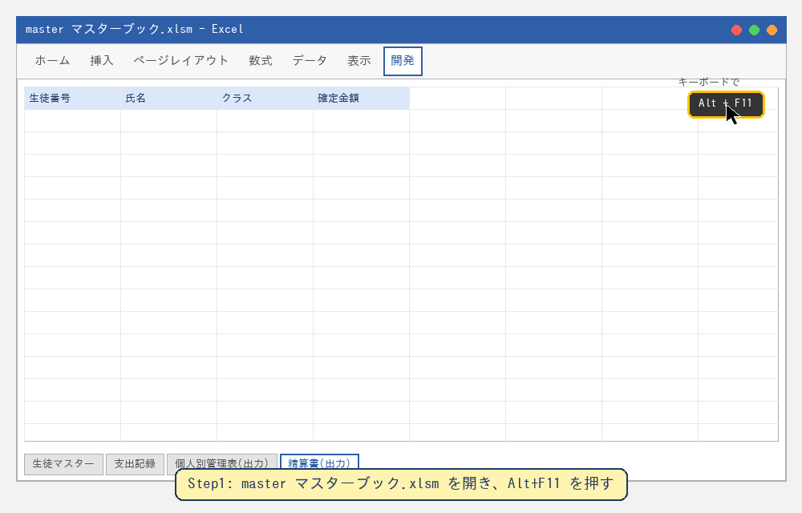
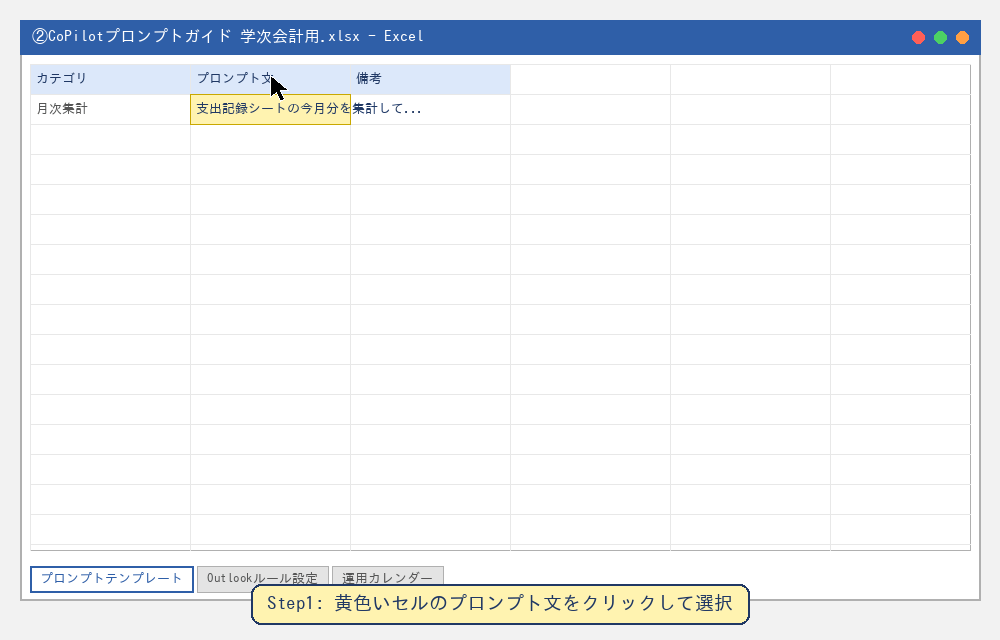
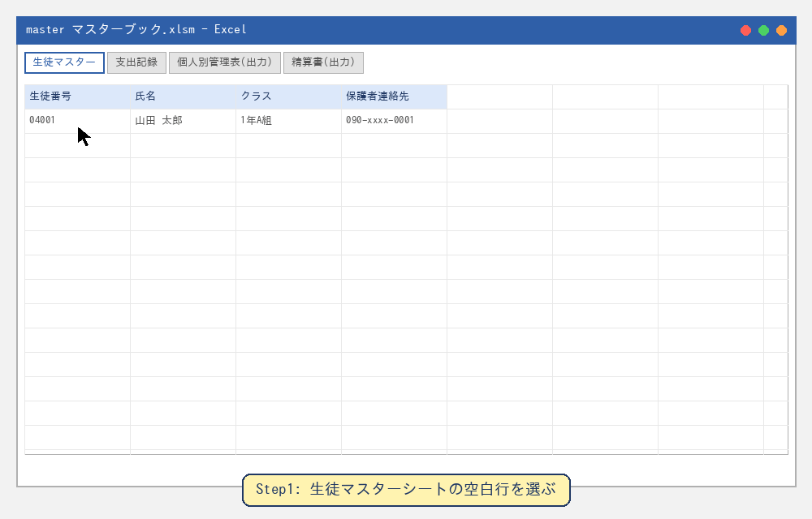
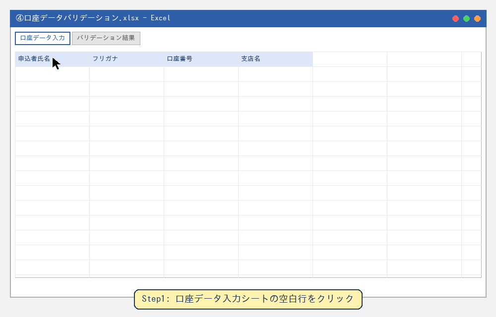

学次会計 業務改善ツール ─ 操作アニメーション集
※これらはMicrosoft Excel / VBE / Copilotの実際の画面ではなく、操作の流れ（どこをクリックし、どのキーを押すか）を分かりやすく示すための簡略化した模式図アニメーションです。実際の画面の見た目とは多少異なりますが、操作手順そのものは同じです。
① VBAマクロの導入・実行

② CoPilotプロンプトの使い方

③ master_マスターブック 基本操作

④ 口座データバリデーションの使い方
